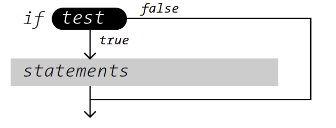
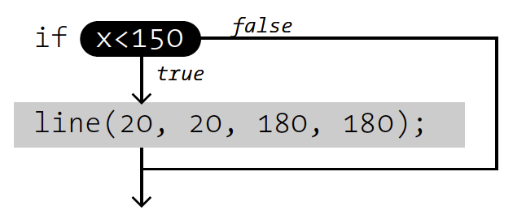
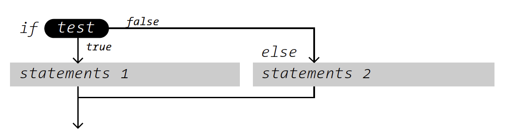
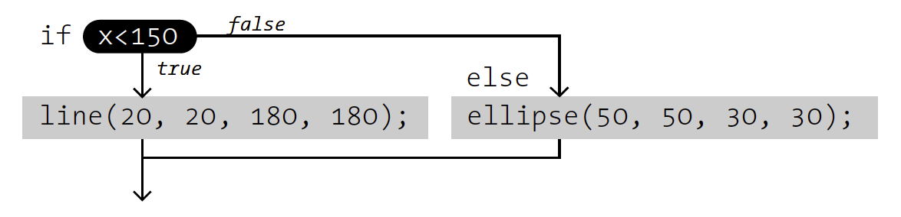
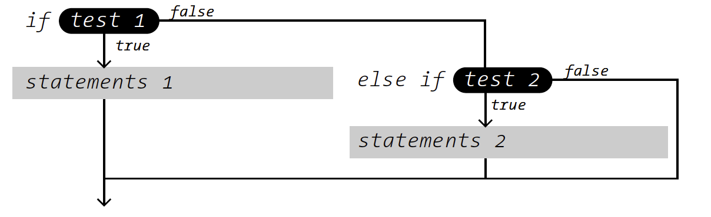
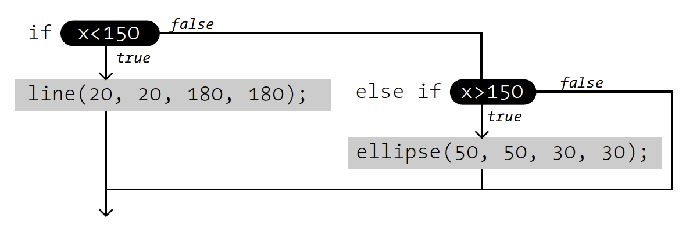
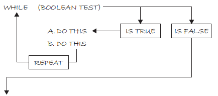
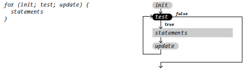

Processing Workshop
Sesión #3
Diego Montesinos / COCOLAB 2016

Condicionales
Expresiones booleanas
Son expresiones que se "evaluan" o "se les asigna" dos valores: Falso o Verdadero.
Expresiones booleanas
- Esta lloviendo.
- Esta clase me ha enseñado mucho.
- Mi pantalón es verde.
Expresiones booleanas
En Processing:
- 15 es mayor que 20
- 5 es igual a 5
- 32 es menor o igual que 33
Expresiones booleanas

Operadores relacionales
- > : mayor que
- < : menor que
- >= : mayor o igual que
- <= : menor o igual que
- == : igualdad
- != : desigualdad
Condicionales
Sirven para tomar decisiones sobre lo que el código debe o no hacer. Es decir, se puede condicionar la ejecución de cierto código.
Condicionales
Si el mouse está en la primera mitad de la pantalla entonces pinta las cosas de negro.
Si la pelota ya se salio de la pantalla regresala.
Condicional simple - Sintaxis
Condicional simple - Sintaxis
Condicional simple - Sintaxis
if (x < 150) {
line(x, 20, 180, 180);
}
Condicional completa - Sintaxis
Condicional completa - Sintaxis
Condicional completa - Sintaxis
if (x < 150) {
line(x, 20, 180, 180);
} else {
ellipse(x, 20, 30, 30);
}
Condicional multiple - Sintaxis
Condicional multiple - Sintaxis
Condicional multiple - Sintaxis
if (x < 150) {
line(x, 20, 180, 180);
} else if (x < 200) {
ellipse(x, 20, 30, 30);
} else {
rect(x, 20, 30, 30);
}
Operadores lógicos
- && : AND
- || : OR
- ! : NOT
Operadores lógicos
- (a > 5) && (b < 10)
- !(mouseY == 5)
Bucles (Loops)
Iteraciones
Bucle, iteración, loop...
Iterar es repetir.
Poner muchas líneas...
line(10, 0, 10, 30);
line(15, 0, 15, 30);
line(20, 0, 20, 30);
line(25, 0, 25, 30);
line(30, 0, 30, 30);
line(35, 0, 35, 30);
while
while
int x = 0;
while(x < 100) {
line(x, 0, x, 30);
x += 5;
}
for
for
Sirve para contar...
Del 0 al 10, sumando 1 en 1.
Del 10 al 30, sumando 10 en 10.
Del 100 al 5, restando 3 en 3.
for
for(int x = 0; x < 10; x++) {
line(x, 0, x, 30);
}